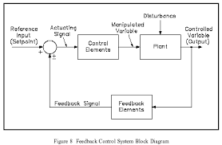

This page explores open-loop and closed-loop systems, the role of feedback in stability and accuracy, and how to identify and model feedback loops using block diagrams. Includes animation and worked examples.
📘 1. Open-Loop vs Closed-Loop Control
Open-Loop: System acts without regard to output. Example: Microwave oven.
Closed-Loop: Feedback path monitors output and corrects deviation. Example: Room thermostat.
Closed-loop systems enhance precision, compensate for disturbances, and adapt to changes.
🧠 2. Feedback Properties
Accuracy: Maintains output close to desired value
Disturbance Rejection: Reduces impact of external inputs
Sensitivity Reduction: System becomes less sensitive to plant variation
Stability: Can either stabilize or destabilize depending on gain/phase margin
Negative feedback is stabilizing; positive feedback amplifies deviations.
📦 3. Feedback Block Diagram
The canonical form of a unity feedback system:
Y(s)/R(s) = G(s) / (1 + G(s)H(s))
G(s): Forward path transfer function
H(s): Feedback path transfer function (often = 1)

🧪 4. Quiz Yourself
Q1: What's the purpose of feedback in control systems?
Answer: To compare the output with reference and adjust the control input to reduce error.
Q2: What is the formula for a unity feedback system?
Answer: Y(s)/R(s) = G(s) / (1 + G(s))
Q3: Name a real-world closed-loop system.
Answer: Air conditioning thermostat, cruise control in a car.